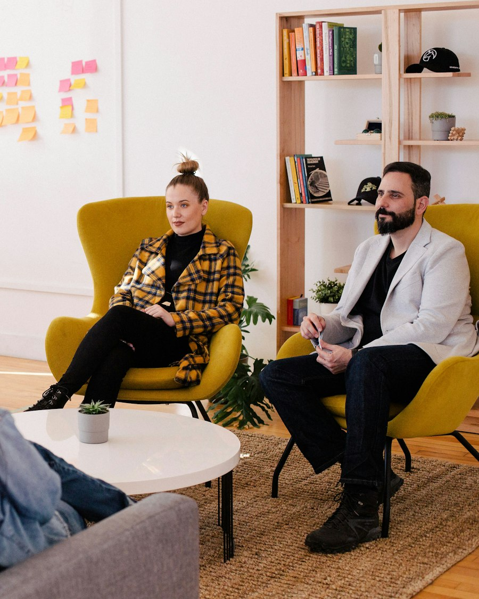

Design Digital Products People Understand and Want to Use
PineSucceed Technologies Pvt Ltd provides UI and UX design
services that help businesses create digital products that are
clear, efficient, accessible, and aligned with how people actually
work.
From user research and journey design to wireframing, interface
design, design systems, prototyping, usability testing, and design
handover, we design experiences that support both users and
business goals.
Our Capabilities
UI/UX Design Services We Offer
Explore our services
01 /
UX Consulting
UX Consulting and Strategy
We help businesses define what a digital product should achieve
for its users and how design will support that outcome.
Our UX consulting includes
Business and product objective analysis
User need and pain point assessment
Experience strategy definition
Design maturity review
Design process and governance setup
Accessibility strategy planning
Design roadmap and priorities

The Outcome
Design That Serves Users and
the Business
Design Grounded in Real Use
Attractive interfaces that frustrate users do not create
value. We design around the tasks people need to complete and
the context they work in.
With PineSucceed, you get:
Design based on research and observed behaviour
Clear task flows and information structure
Interfaces consistent with your brand and platform
Accessibility considered from the start
Design validated with users before build
Documentation that supports accurate implementation
Business-Focused Design Decisions
Design affects adoption, efficiency, support cost, and
conversion. We help stakeholders connect design choices to
those outcomes.
We help answer key questions such as:
Who are our users and what are they trying to achieve?
Where does the current experience cause friction or
abandonment?
How should information and tasks be organized?
Which design approach suits our product and platform?
How do we ensure accessibility and inclusion?
How will we validate the design before development?
How will design stay consistent as the product grows?
Our Approach
Our UI/UX Design Process
Step 01
Discovery and Design Brief
Step 01 / 08
Discovery and Design Brief
We begin by understanding the product, users, business
objectives, and constraints that shape the experience.
Key activities:
Stakeholder and product discussions
Business objective and success metric definition
User and audience identification
Existing product and experience review
Technical and platform constraint discovery
Competitive and reference review
Design brief and scope agreement
Step 02
User Research and Analysis
Step 02 / 08
User Research and Analysis
We gather evidence about how users behave, what they need,
and where current experiences fail them.
Research activities include:
User and stakeholder interviews
Usage and analytics data review
Surveys and feedback analysis
Context and environment investigation
Task and goal identification
Pain point and friction mapping
Research synthesis and insight definition
Step 03
Structure and Information Architecture
Step 03 / 08
Structure and Information Architecture
We organize content, features, and navigation so users can
find and complete what matters.
Structure activities include:
Content and feature inventory
User journey mapping
Navigation and hierarchy design
Labelling and terminology decisions
Search and filter structure
Task flow definition
Structural validation with users
Step 04
Wireframing and Interaction Design
Step 04 / 08
Wireframing and Interaction Design
We define screen structure, layout, and behaviour before
visual design is applied.
Design activities include:
Wireframe development
Layout and content hierarchy design
Interaction and state definition
Responsive behaviour planning
Error and empty state design
Wireframe review and iteration
Stakeholder alignment
Step 05
Prototyping and Validation
Step 05 / 08
Prototyping and Validation
We build prototypes and test them with real users to confirm
the design works before development.
Validation activities include:
Interactive prototype development
Task-based usability testing
Moderated and unmoderated sessions
Prototype demonstration to stakeholders
Feedback analysis and prioritization
Design refinement cycles
Concept validation and sign-off
Step 06
Visual and Interface Design
Step 06 / 08
Visual and Interface Design
We apply visual design, brand alignment, and design system
structure to produce implementation-ready screens.
Design activities include:
Visual design direction and exploration
Colour, typography, and spacing systems
Component and pattern design
High fidelity screen design
Responsive design across breakpoints
Accessibility verification
Design review and approval
Step 07
Developer Handover and Design QA
Step 07 / 08
Developer Handover and Design QA
We support implementation so that what is built matches what
was designed.
Handover activities include:
Design specification documentation
Component and interaction documentation
Asset and token delivery
Developer walkthrough sessions
Implementation review
Design correction and clarification
Final design verification
Step 08
Measurement, Iteration, and Governance
Step 08 / 08
Measurement, Iteration, and Governance
After launch, we measure how the design performs and refine
it based on real behaviour.
Ongoing activities include:
Usage and behaviour analysis
Conversion and task completion measurement
User feedback collection
Usability issue identification
Design iteration and improvement
Design system upkeep
Design governance across teams
UI/UX Design for Different Business Goals
Launch a new digital product
Research, journeys, wireframes, prototyping, interface
design, and handover
Improve an existing product
Usability audit, friction analysis, redesign, and measured
improvement
Increase sign-up conversion
Onboarding, registration flow, and first-use experience
design
Reduce support requests
Task clarity, guidance design, self-service, and error
prevention
Improve business application efficiency
Workflow design, data entry efficiency, and role-based
interface design
Improve mobile experience
Mobile journey design, platform patterns, and responsive
layout
Ensure accessibility compliance
Accessibility requirements, design remediation, and
inclusive patterns
Build design consistency
Design system, component library, tokens, and usage
documentation
Validate a concept early
Prototype development, user testing, and concept refinement
Add design capacity
UI, UX, research, accessibility, or design leadership
augmentation
Design Tools, Standards, and Technologies We Use
Design Tools
Figma and comparable interface design and prototyping
platforms
Prototyping
Interactive prototyping, clickable flows, and animation
tools
Research
Interview guides, survey tools, session recording, and
feedback platforms
Testing
Moderated and unmoderated usability testing platforms
Information Architecture
Card sorting, tree testing, and site mapping tools
Design Systems
Design tokens, component libraries, and documentation
platforms
Accessibility
WCAG guidance and accessibility testing tools and checklists
Analytics
Product analytics, heatmaps, session replay, and funnel
analysis tools
Handover
Specification tools, asset export, and design-to-development
workflows
Collaboration
Design review, feedback, and version management practices
Our Approach
Why Choose PineSucceed for UI/UX Design?
We base design decisions on user research, usage evidence,
and usability testing rather than personal preference or
aesthetics alone.
Design work is tied to measurable outcomes such as
conversion, task completion, efficiency, adoption, and
support reduction.
Our designers work alongside developers and understand
technical constraints, so designs are practical to
implement and easier to hand over.
Inclusive design and accessibility requirements are
addressed during design rather than retrofitted after an
audit failure.
We build component libraries, tokens, and documentation
that keep interfaces consistent as products and teams
grow.
PineSucceed designs data-heavy, workflow-driven, and
role-based business applications, not only marketing
interfaces.
Prototypes and usability testing confirm the design works
before development investment is committed to
implementation.
Beyond initial design, we support implementation review,
measurement, iteration, design system upkeep, and design
governance.
The Value
Benefits of UI/UX Design Services
UI and UX design services help businesses create digital products
that users adopt quickly and operate efficiently.
Easier adoption
Clearer and more intuitive products
Improved user adoption and retention
Reduced user error and support demand
Efficient journeys
Higher conversion on digital journeys
Improved task efficiency for business users
Consistent experience across products
Inclusive consistency
Accessible experiences for a wider audience
Reduced rework through early validation
Faster and more accurate development handover
Measurable growth
Measurable improvement in product metrics
Stronger brand perception and trust
A scalable design foundation for future growth
Ready to Improve Your Product Experience?
PineSucceed Technologies Pvt Ltd helps businesses research
users, design journeys and interfaces, build design systems,
validate designs through testing, and support accurate
implementation.
Whether you are designing a new product, improving an existing
application, building a design system, or addressing
accessibility gaps, our team can help you create an experience
users understand and value.
Frequently Asked Questions
UI and UX design services cover user research, persona and
journey definition, information architecture, wireframing,
prototyping, interface and visual design, design systems,
accessibility, usability testing, developer handover, and
ongoing design iteration.
UX design focuses on how a product works for users: their goals,
journeys, task flows, and overall experience. UI design focuses
on how the product looks and responds: layout, typography,
colour, components, and visual consistency.
Research replaces assumptions with evidence. Understanding real
user goals, contexts, and frustrations leads to designs that
solve genuine problems rather than ones the team imagined.
Timelines depend on scope, number of screens, research
requirements, and validation cycles. A focused design effort may
take a few weeks, while a full product design with research, a
design system, and testing takes longer.
Yes. We design responsive web applications, native and
cross-platform mobile applications, and combined experiences,
respecting platform conventions and usage contexts.
Yes. We audit the current experience for usability and
accessibility issues, identify friction, design improvements,
validate them with users, and support implementation.
We define accessibility requirements early, design with
contrast, keyboard navigation, semantic structure, clear
labelling and error messaging in mind, verify against recognised
guidelines, and support remediation of existing gaps.
Yes. We define design tokens, typography and colour foundations,
component libraries with states and variations, usage
documentation, and developer handover specifications.
Yes. We plan and run moderated or unmoderated usability testing
on prototypes or live products, analyse task completion and
errors, and refine designs based on findings.
Yes. We have experience with data-heavy, workflow-driven, and
role-based enterprise applications, including dashboards, data
entry interfaces, and approval flows.
We provide specification documentation, component and
interaction details, responsive behaviour definitions, assets
and tokens, walkthrough sessions, and implementation review to
keep the built interface faithful to the design.
Yes. We align interface design with your brand system, or help
define a product design language where brand guidelines do not
yet cover digital product patterns.
Yes. We can provide UI designers, UX researchers, interaction
designers, accessibility specialists, design system engineers,
and design leads as needed for your roadmap.
We track metrics appropriate to the product, such as task
completion and time on task, conversion and activation rates,
error and support volumes, engagement, and user satisfaction,
then compare before and after.
Yes. Ongoing support can include usage analysis, usability issue
identification, design iteration, design system upkeep,
accessibility review, and design governance across products and
teams.